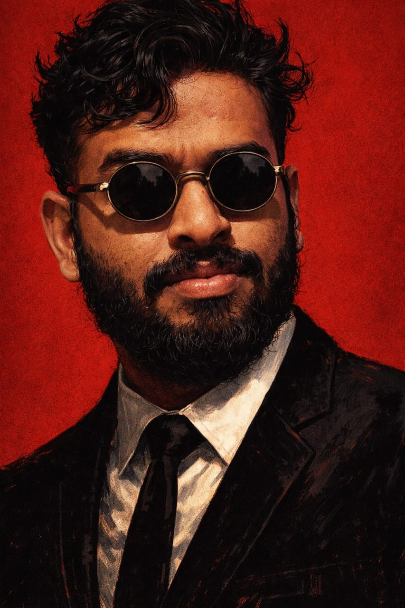

I’m a software engineer passionate about building products that reach and positively impact people at a global scale. I enjoy working on meaningful features, improving existing experiences, and constantly learning to broaden my perspective on product and system design. Driven by curiosity and innovation, I strive to grow personally while contributing ideas that create real-world value.

I grew up in Army cantonments across different parts of India, from Tezpur to Hyderabad. Living in multiple cities shaped my ability to adapt quickly and feel comfortable in new environments. My native place, Varanasi, keeps me grounded and connected to my roots, while my upbringing has helped me connect easily with people from diverse backgrounds.
Academics have always been an area of consistency for me. I secured a 10.0 CGPA in my 10th grade, 95.8% in 12th, and completed my B.Tech from CMR College of Engineering and Technology with a CGPA of 8.86. This journey helped me build a strong foundation of discipline, focus, and long-term commitment.
Sports has been a core part of my life and has played a significant role in shaping my discipline, mindset, and work ethic. I competed at the national level in Taekwondo and Handball and have also played football at the regional level. Training and competing over the years taught me far more than physical fitness — it taught me consistency, accountability, teamwork, and how to stay calm, focused, and composed under pressure.
I have attended the Services Selection Board (SSB) interview six times, with three conference outs. While the journey has been challenging, it strengthened my resilience and reinforced a mindset of persistence. It also helped me develop qualities such as integrity, social adaptability, and the ability to perform under pressure.
Outside of work, I enjoy writing poetry, telling stories, and bringing a sense of humor into conversations. I value teamwork and like being someone people can rely on — whether it’s for clear communication, support, or keeping the energy positive within a group.
I see life as a journey guided by curiosity — like a compass always pointing toward the next uncharted map.
I work on Android platform and system-level development, building and maintaining features that ship on production devices used by millions of users worldwide. My work spans core OS components, carrier customization, platform security, and user-facing system features. I am involved across the full development lifecycle — from design and implementation to debugging, optimization, and long-term support — with a strong focus on reliability, performance, and user experience.
Android SDK, Kotlin, Java, Jetpack, Coroutines, Hilt, Room, AOSP
OOP, Clean Architecture, MVVM, Design Patterns
Node.js, Express, MongoDB, REST APIs, JWT, Git, Gradle
Developed an AI-powered Sketch to Image feature for Moto Notes, adopted across stylus-enabled Motorola devices.
Impact: Improved user engagement on stylus devices
Led Android platform features including Video Telephony, Wi-Fi Calling, RTT, and Enriched Calling with consistent carrier behavior.
Impact: Used by millions of users globally
Built a scalable backend using Node.js and MongoDB with JWT-based authentication and REST APIs.